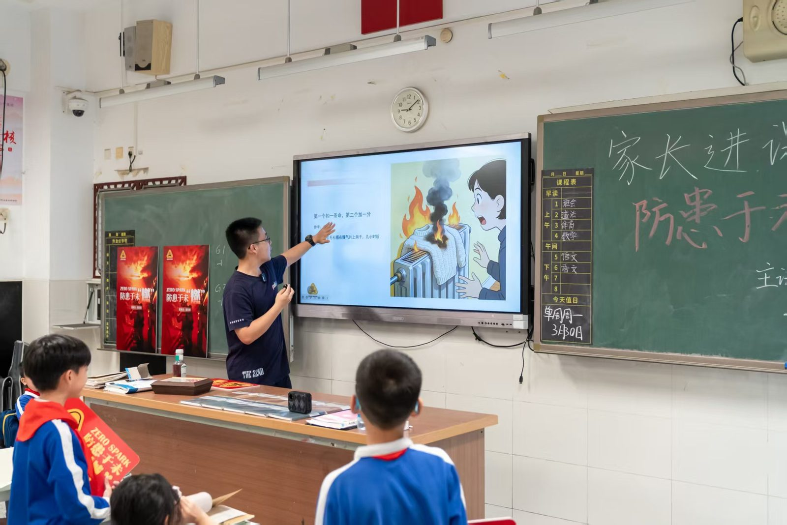
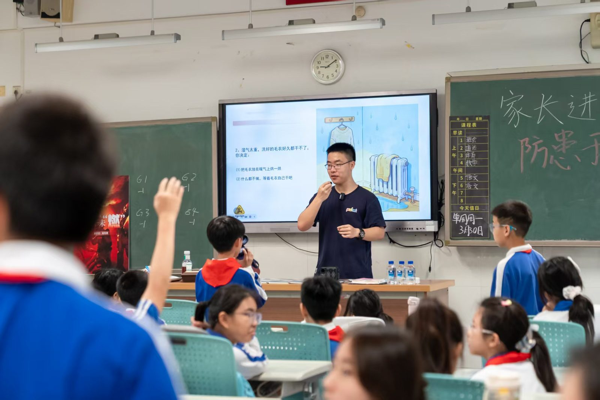
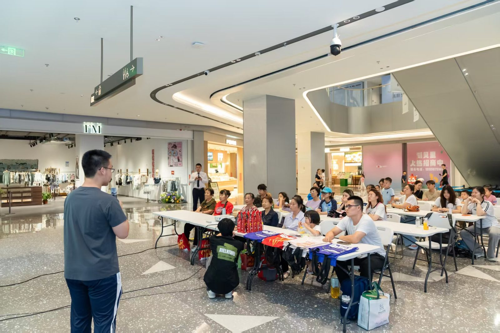

Why I started it
做灭火研究的时候，我很快意识到：最大的瓶颈不在材料、不在制造，而在认知。 普通人不会买灭火贴片，不是因为它贵，而是因为他们不相信自己会需要。
Chemisfun 起源于我自己想解决这个问题： 把化学讲成一个愿意相信的故事。

What I write about
- 生活中的化学误解（"无糖饮料不会蛀牙"是真的吗？）
- 材料科学背后的真实故事（灭火涂层是怎么工作的）
- 风险与安全（为什么锂电池会自燃）
- 皮肤 / 伤口 / 健康相关的化学原理



How I write — the rules I keep
"不删术语，不降智，不夸张。把自己当一个诚实的朋友。"
- 不删术语——把术语讲清楚，而不是绕开它。
- 不降智——读者比我想象的更聪明。
- 不夸张——危险被夸大过太多次，相信的成本被透支过太多次。
- 结构先行——每一篇都要回答一个具体问题。
What this is for — intellectually
Stanford 喜欢的那种 intellectual vitality——不是学会了知识， 而是重新组织知识、传播知识、改变他人理解。 Chemisfun 是这件事的载体。
对 Penn / JHU 同样有意义：Penn 看 Doer、看 product + impact、看 community； JHU 看跨学科深度。Chemisfun 不是"额外活动"，而是这条主线的人性层。
Recent pieces
- 《为什么你的充电宝会自燃》——一篇关于锂电池热失控的长文
- 《水凝胶真的能"修复"皮肤吗》——回应实验室工作的科普
- 《厨房灭火的三秒原则》——配合 SafeHome 的社区讲座稿